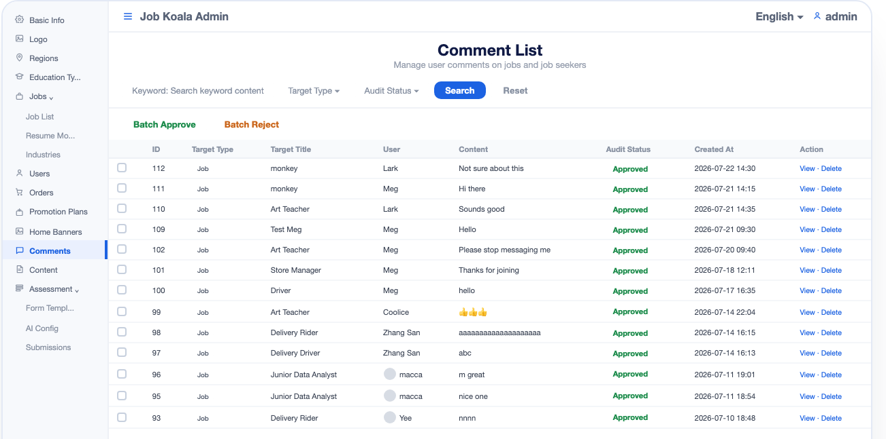
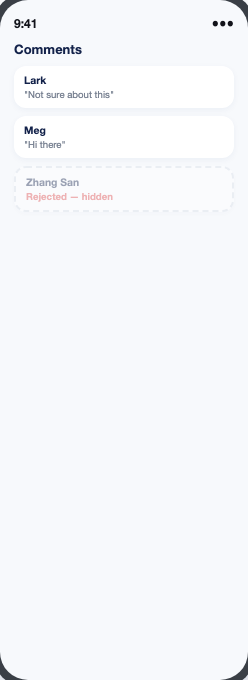

4.10.1Comment Moderation
Every comment on a job post or a job-seeker profile lands here already Approved — nothing waits for a moderator. The console can view a thread or delete a comment, and that is all.
🐨Job Koala Admin
Dashboard
SYSTEM
Administrators
Roles
Basic Info
Logs
Regions
Education Types
JOBS
Job List
Resume Management
Industries
Users
ORDERS
Order List
Promotion Plans
Home Banners
Comments
Verification Review
CONTENT
FAQ
Notification Templates
Privacy Policy
User Agreement
ASSESSMENT
Form Templates
AI Config
Assessment Records
Consultants
Consultant Pricing

LIVE · JOB DETAIL

Comments show under the job post as soon as they are posted; deleting one in the console is what takes it down.